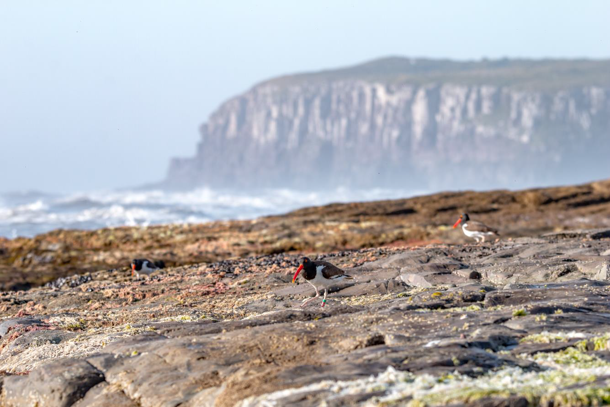

Novo artigo publicado na revista Food Webs mostra como as características da paisagem afetam a dieta de uma ave limícola ao longo da costa do sul do Brasil
Faça download do PDF diretamente clicando aqui
Veja esta apresentação sobre o artigo
1 Aves limícolas no sul do Brasil
O sul do Brasil é uma área de conhecida importância para as aves limícolas. Diversas espécies migrantes neárticas - ou seja, que reproduzem no ártico e migram para o hemisfério Sul - utilizam as extensas praias arenosas e campos costeiros do Rio Grande do Sul como área de invernada. Elas reproduzem durante o verão boreal (do hemisfério norte) e passam o verão de lá por aqui, em busca do alimento farto.
Essa oferta de alimento que temos aqui está ligada a diversos fatores. Primeiro, o sul do Brasil apresenta extensas praias arenosas quase ininterruptas ao longo de ~700 quilômetros. Essas praias são dissipativas, com baixa inclinação, oferecendo largas áreas para alimentação na zona intermareal e descanso na praia. As águas marinhas do sul do Brasil são influenciadas pela Corrente Norte do Brasil - quente, tropical, pobre em nutrientes - e a corrente das Malvinas, que é mais fria e rica em nutrientes. Esse encontro de correntes caracteriza a convergência subtropical, sendo uma área especialmente rica e diversa em organismos, o que traz alimento para as aves limícolas na beira da praia. Além disso, associadas à essas praias ocorrem campos de dunas, banhados e outros tipos de ambientes costeiros que podem ser utilizados pelas aves.
2 Mas e o piru-piru (Haematopus palliatus)?
Diferente das espécies migratórias neárticas, o piru-piru é uma espécie residente no sul do Brasil - ou seja, reproduz e se alimenta na região, permanecendo o ano todo. Além disso, “Plano hemisférico para a conservação do piru-piru”, publicado em 2014, classifica a costa do Rio Grande do Sul como uma “área chave” para a conservação global da espécie, por conter mais de 3% da população total. Em outras palavras, o sul do Brasil é uma área de extrema importância para a espécie.
O piru-piru é uma ave especialista na predação de moluscos bivalves (mariscos, mexilhões) e se aproveita da abundante macrofauna bentônica que ocorre na zona intermareal, ou seja, na área molhada da praia entre o vai-e-vem das ondas. Algumas dessas presas também são conhecidas pelos humanos que tem mais contato com a praia, como o moçambique (Donax hanleyanus) e o marisco-branco (Amarilladesma mactroides), usados para fazer isca para pesca de caniço ou para os mais antigos fazerem aquele pastel de marisco. Mas além da beira da praia arenosa, o piru-piru pode se alimentar na beira de estuários, em costões rochosos - e essa informação é importante para o trabalho que fizemos e vamos detalhar a seguir.

Além de uma área de alimentação importante, o piru-piru reproduz ao longo de toda costa do Rio Grande do Sul, em especial em áreas de campos de dunas vegetadas não móveis, conforme descrevemos em um estudo anterior. Ao contrário de algumas outras aves limícolas onde o filhote sai do ninho logo ao nascer e consegue se alimentar por conta própria (chamadas nidífugas), os filhotes dos piru-pirus dependem do alimento fornecido durante as primeiras semanas (cerca de 1-2 meses) de vida (classificados como seminidífugos). Com isso, durante a reprodução, o alimento consumido pelos adultos é restringido espacialmente às áreas próximas do sítio reprodutivo - ou seja, o ninho, ou onde os filhotes estão escondidos.
3 Como as variações na paisagem costeira podem influenciar a dieta do piru-piru?
Pensando que o piru-piru é uma espécie tida como especialista em predar moluscos, como será que o consumo de alimentos (presas) varia em locais com paisagens distintas? Foi nessa pergunta que focamos nesse trabalho recém publicado na revista Food Webs. | Ao longo dessa extensa faixa de praia arenosa, ocorrem ambientes rochosos, como na região de Torres; áreas com influência de planos de lama estuarinos, como a Lagoa do Peixe; e áreas de praia arenosa homogênea. Portanto, selecionamos algumas áreas de substrato misto (praia arenosa e costões rochosos) e substrato arenoso (praias e estuários apenas). Três praias no entorno de Torres foram as áreas de substrato misto: Passo de Torres, Torres e Parque Estadual de Itapeva. Duas praias foram substrato arenoso: Praia das Cabras e Parque Nacional da Lagoa do Peixe.
4 Como fizemos o trabalho?
BLABLALLBLALA
5 O que descobrimos?
BALDADNLAS